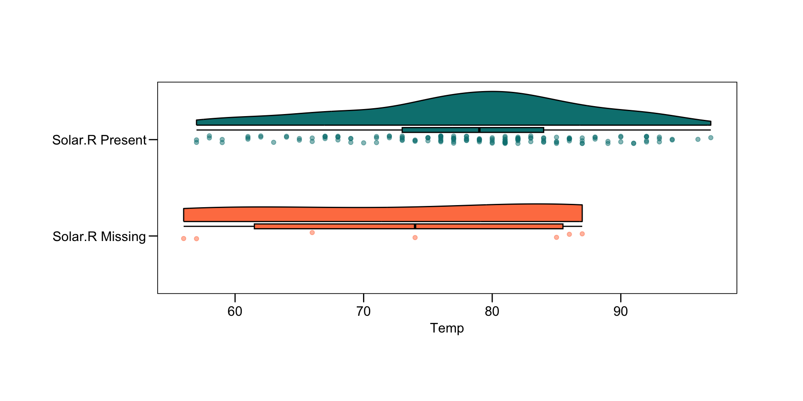
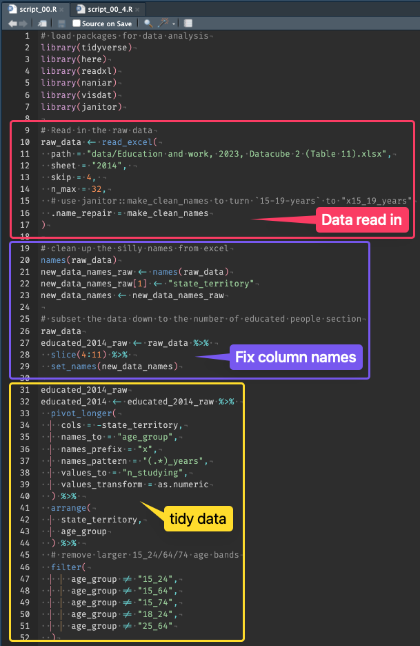
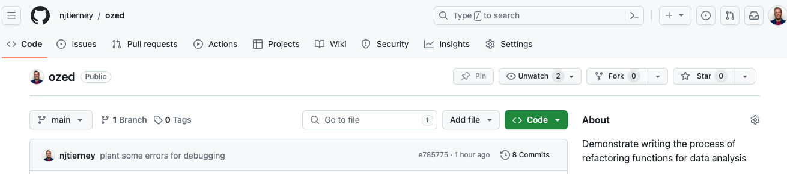
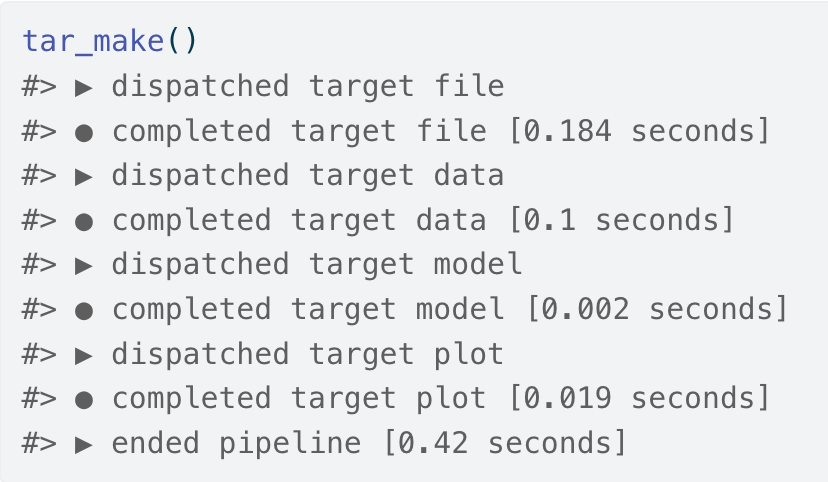

| Temp | Solar.R |
|---|---|
| 67 | 190 |
| 72 | 118 |
| 74 | 149 |
| 62 | 313 |
| 56 | NA |
| 66 | NA |
Practical Functions: Practically Magic
University of Auckland
Nicholas Tierney
Telethon Kids Institute
2024-03-21
Audience
- Someone who has never written a function
- Someone who has written a couple of functions
- The sceptic function user
- The regular function user
- Various members of the R Core Team
Outline
- Why I care about functions
- Function Fundamentals
- Functions in Practice
Prior Art
The impact of missingness?
The impact of missingness?
A script:
x <- na.omit(airquality$Temp[which(is.na(airquality$Solar.R))])
y <- na.omit(airquality$Temp[which(!is.na(airquality$Solar.R))])
x_mean_diff <- (x - (sum(x) / length(x)))^2
sum_x_mean_diff <- sum(x_mean_diff)
s_x <- sqrt((1 / length(x)) * sum_x_mean_diff)
se_x <- s_x / sqrt(length(x))
y_mean_diff <- (y - (sum(y) / length(y)))^2
sum_y_mean_diff <- sum(y_mean_diff)
s_x <- sqrt((1 / length(y)) * sum_y_mean_diff)
se_y <- s_x / sqrt(length(y))
numerator <- mean(x) - mean(y)
denominator <- sqrt(se_x + se_y)
result <- numerator / denominatorA(n) improved script:
var_missing <- airquality$Solar.R
var_interest <- airquality$Temp
which_missing <- which(is.na(var_missing))
which_complete <- which(!is.na(var_missing))
var_interest_miss <- var_interest[which_missing]
var_interest_complete <- var_interest[which_complete]
result <- t.test(var_interest_miss, y = var_interest_complete)
result
Welch Two Sample t-test
data: var_interest_miss and var_interest_complete
t = -0.98706, df = 6.2689, p-value = 0.3602
alternative hypothesis: true difference in means is not equal to 0
95 percent confidence interval:
-17.669258 7.436381
sample estimates:
mean of x mean of y
73.00000 78.11644 Can I use other variables?
var_missing <- airquality$Ozone
var_interest <- airquality$Wind
which_missing <- which(is.na(var_missing))
which_complete <- which(!is.na(var_missing))
var_interest_miss <- var_interest[which_missing]
var_interest_complete <- var_interest[which_complete]
result_ozone_wind <- t.test(var_interest_miss, y = var_interest_complete)
result_ozone_wind
Welch Two Sample t-test
data: var_interest_miss and var_interest_complete
t = 0.60911, df = 63.646, p-value = 0.5446
alternative hypothesis: true difference in means is not equal to 0
95 percent confidence interval:
-0.8999377 1.6893132
sample estimates:
mean of x mean of y
10.256757 9.862069 “Spot the difference”
var_missing <- airquality$Ozone
var_interest <- airquality$Wind
which_missing <- which(is.na(var_missing))
which_complete <- which(!is.na(var_missing))
var_interest_miss <- var_interest[which_missing]
var_interest_complete <- var_interest[which_complete]
result_ozone_wind <- t.test(var_interest_miss, y = var_interest_complete)
# I just like DO IT ALL AGAIN??
var_missing <- airquality$Solar.R
var_interest <- airquality$Temp
which_missing <- which(is.na(var_missing))
which_complete <- which(!is.na(var_missing))
var_interest_miss <- var_interest[which_missing]
var_interest_complete <- var_interest[which_complete]
result_solar_temp <- t.test(var_interest_miss, y = var_interest_complete)…eventually…a function!
missingness_impact <- function(when_missing, is_different){
when_missing_index <- which(is.na(when_missing))
when_complete_index <- which(!is.na(when_missing))
is_different_miss <- is_different[when_missing_index]
is_different_complete <- is_different[when_complete_index]
result <- t.test(is_different_miss, y = is_different_complete)
result
}Functions = expression
Welch Two Sample t-test
data: is_different_miss and is_different_complete
t = -0.98706, df = 6.2689, p-value = 0.3602
alternative hypothesis: true difference in means is not equal to 0
95 percent confidence interval:
-17.669258 7.436381
sample estimates:
mean of x mean of y
73.00000 78.11644 Functions = expression
Welch Two Sample t-test
data: is_different_miss and is_different_complete
t = 0.026831, df = 60.447, p-value = 0.9787
alternative hypothesis: true difference in means is not equal to 0
95 percent confidence interval:
-3.546847 3.643306
sample estimates:
mean of x mean of y
77.91892 77.87069 Teaching functions?
[1] 32[1] 77Trivialises functions
Functions should be relevant to you
Functions are expression they are ideas
Functions manage complexity
DRY: Don’t Repeat Yourself
If you copy and paste the same code 3 times, write a function
is_different <- airquality$Temp
when_missing_index <- which(is.na(airquality$Ozone))
when_complete_index <- which(!is.na(airquality$Ozone))
is_different_miss <- is_different[when_missing_index]
is_different_complete <- is_different[when_complete_index]
result_ozone_temp <- t.test(is_different_miss, is_different_complete)
is_different <- airquality$Wind
when_missing_index <- which(is.na(airquality$Solar.R))
when_complete_index <- which(!is.na(airquality$Solar.R))
is_different_miss <- is_different[when_missing_index]
is_different_complete <- is_different[when_complete_index]
result_solar_wind <- t.test(is_different_miss, is_different_complete)DRY: Don’t re-read Yourself*
If you re-read your code 3 times, write a function
is_different <- airquality$Temp
when_missing_index <- which(is.na(airquality$Ozone))
when_complete_index <- which(!is.na(airquality$Ozone))
is_different_miss <- is_different[when_missing_index]
is_different_complete <- is_different[when_complete_index]
result_ozone_temp <- t.test(is_different_miss, is_different_complete)
is_different <- airquality$Wind
when_missing_index <- which(is.na(airquality$Solar.R))
when_complete_index <- which(!is.na(airquality$Solar.R))
is_different_miss <- is_different[when_missing_index]
is_different_complete <- is_different[when_complete_index]
result_solar_wind <- t.test(is_different_miss, is_different_complete)How to write a function
Functions are tools for managing complexity
AKA as abstraction or abstracting away
So, what complexity do we want to manage?
What do we want to abstract away?
is_different <- airquality$Temp
when_missing_index <- which(is.na(airquality$Ozone))
when_complete_index <- which(!is.na(airquality$Ozone))
is_different_miss <- is_different[when_missing_index]
is_different_complete <- is_different[when_complete_index]
result_ozone_temp <- t.test(is_different_miss, is_different_complete)Start with the bones
Writing functions is writing
What am I interested in?
misstest <- function(Temp, Ozone){
is_different <- airquality$Temp
when_missing_index <- which(is.na(airquality$Ozone))
when_complete_index <- which(!is.na(airquality$Ozone))
is_different_miss <- is_different[when_missing_index]
is_different_complete <- is_different[when_complete_index]
result_ozone_temp <- t.test(is_different_miss, is_different_complete)
}Writing functions is writing
What do I name things?
misstest <- function(is_different, Ozone){
# is_different <- airquality$Temp
when_missing_index <- which(is.na(airquality$Ozone))
when_complete_index <- which(!is.na(airquality$Ozone))
is_different_miss <- is_different[when_missing_index]
is_different_complete <- is_different[when_complete_index]
result_ozone_temp <- t.test(is_different_miss, is_different_complete)
}Writing functions is writing
Naming things can be tricky; that’s OK
misstest <- function(is_different, when_missing){
# is_different <- airquality$Temp
# when_missing_index <- which(is.na(airquality$Ozone))
when_missing_index <- which(is.na(when_missing))
when_complete_index <- which(!is.na(when_missing))
is_different_miss <- is_different[when_missing_index]
is_different_complete <- is_different[when_complete_index]
result_ozone_temp <- t.test(is_different_miss, is_different_complete)
}Writing functions is writing
We return the last thing
misstest <- function(is_different, when_missing){
# is_different <- airquality$Temp
# when_missing_index <- which(is.na(airquality$Ozone))
when_missing_index <- which(is.na(when_missing))
when_complete_index <- which(!is.na(when_missing))
is_different_miss <- is_different[when_missing_index]
is_different_complete <- is_different[when_complete_index]
result_ozone_temp <- t.test(is_different_miss, is_different_complete)
result_ozone_temp
}Writing functions is writing
Cleaning up old lettuce (removing unused comments)
misstest <- function(is_different, when_missing){
# is_different <- airquality$Temp
# when_missing_index <- which(is.na(airquality$Ozone))
when_missing_index <- which(is.na(when_missing))
when_complete_index <- which(!is.na(when_missing))
is_different_miss <- is_different[when_missing_index]
is_different_complete <- is_different[when_complete_index]
result_ozone_temp <- t.test(is_different_miss, is_different_complete)
result_ozone_temp
}Writing functions is writing
Cleaning up old lettuce (removing unused comments)
misstest <- function(is_different, when_missing){
when_missing_index <- which(is.na(when_missing))
when_complete_index <- which(!is.na(when_missing))
is_different_miss <- is_different[when_missing_index]
is_different_complete <- is_different[when_complete_index]
result_ozone_temp <- t.test(is_different_miss, is_different_complete)
result_ozone_temp
}Writing functions is writing
Name the function something that evokes the action
missingness_impact <- function(is_different, when_missing){
when_missing_index <- which(is.na(when_missing))
when_complete_index <- which(!is.na(when_missing))
is_different_miss <- is_different[when_missing_index]
is_different_complete <- is_different[when_complete_index]
result_ozone_temp <- t.test(is_different_miss, is_different_complete)
result_ozone_temp
}You need to use the function
Writing functions is writing
You need to use the function
Welch Two Sample t-test
data: is_different_miss and is_different_complete
t = 0.026831, df = 60.447, p-value = 0.9787
alternative hypothesis: true difference in means is not equal to 0
95 percent confidence interval:
-3.546847 3.643306
sample estimates:
mean of x mean of y
77.91892 77.87069 Writing functions is writing
And write the output to a variable
temp_difference_ozone_missing <- missingness_impact(
when_missing = airquality$Ozone,
is_different = airquality$Temp
)
temp_difference_ozone_missing
Welch Two Sample t-test
data: is_different_miss and is_different_complete
t = 0.026831, df = 60.447, p-value = 0.9787
alternative hypothesis: true difference in means is not equal to 0
95 percent confidence interval:
-3.546847 3.643306
sample estimates:
mean of x mean of y
77.91892 77.87069 Iteration: Skateboard -> Car

(heard via Stat545 functions chapter)
process for writing functions
- Copy text into body
- Identify complexity to manage
- Abstract the complexity
- Writing functions is iterative, Just like regular writing
Circling back to DRY
- The problem is complex code
- DRY treats the symptom - repetition
- But the cause is expression and reasoning
- A function isn’t only needed when you repeat code
# Tell me why this is a bad idea!
blindly_functionalising <- function(){
is_different <- airquality$Temp
when_missing_index <- which(is.na(airquality$Ozone))
when_complete_index <- which(!is.na(airquality$Ozone))
is_different_miss <- is_different[when_missing_index]
is_different_complete <- is_different[when_complete_index]
result_ozone_temp <- t.test(is_different_miss,
is_different_complete)
}Functions are about expression
- Explain and express ideas
- Manage complexity
DRY has benefits - but I think expression and complexity are more powerful
- Avoiding copy/paste avoids easy errors!
- Make changes in one place - awesome!
Code is for people
[W]e want to establish the idea that a computer language is not just a way of getting a computer to perform operations but rather that it is a novel formal medium for expressing ideas about methodology. Thus, programs must be written for people to read, and only incidentally for machines to execute.
— Structure and Interpretation of Computer Programs. Abelson, Sussman, and Sussman, 1984.
You are always collaborating…with your future self
Naming things is hard
There are only two hard things in Computer Science: cache invalidation and naming things.
– Phil Karlton
Naming things is hard
Converting temperature?
What makes functions hard?
The idea of inputs and outputs isn’t hard
What is hard it taking code, (like the code in a data analysis) and finding the parts that need to change
There’s a level of “I got it to work” and there’s a level of “It works, and I can reason about it”
– Joe Cheng You have to be able to reason about it | Data Science Hangout
I can reason about it
…how do you take all this complexity and break it down into smaller pieces
each of which you can reason about
each of which you can hold in your head
each of which you can look at and be like “yup, I can fully ingest this entire function definition, I can read it line by line and prove to myself this is definitely correct…
I can reason about it
So software engineering… is a lot about this: How do you break up inherently complicated things that we are trying to do into small pieces that are individually easy to reason about. That’s half the battle…
The other half of the battle is how do we combine them in ways that can be reliable and also easy to reason about
How many things can you hold in your head?
how do you take all this complexity and break it down into smaller pieces, each of which you can reason about, each of which you can hold in your head
Our working memory = 7 +/- 2 (5-9) chunks
“The Magical Number Seven, Plus or Minus Two: Some Limits on Our Capacity for Processing Information” George A. Miller, Psychological Review, 1956, 63 (2)
How many things can you hold in your head?
Memory is not limited by bits, but by chunks
1-8-0-0-1-3-1-0-8-6
1800 131 086
So practice breaking code into chunks
Breaking code into chunks
50 lines of code
Is not 50 ideas
Chunk code into ideas
Reason with them
Find the complexity
Abstract complexity

Demo: Process of cleaning up a data analysis
Debugging should be taught with functions
- Otherwise we build a box we can’t look inside and fix
- Or give power tools without safety equipment
- We need to teach what happens when things go wrong
You should be learning debugging when learning functions
- An error when writing can feel like punishment
- But hanging out with errors is the normal state
- It’s like an expression problem in your writing
Using browser()
# example function code here - something useful though
tidy_education <- function(data, names){
names <- trimws(names)
browser() # jump into this point in the function
# "n" Next line
tidied <-
# "s" Step into highlighted function
combined <- combine_custom_data(tidied, data)
# "f" Finish execution of loop or function
# "Q" Quit browser
# "help" - loads a list of helper code
}Practitioner <> Programmer
The ambiguity [of the S language] is real and goes to a key objective: we wanted users to be able to begin in an interactive environment, where they did not consciously think of themselves as programming. Then as their needs became clearer and their sophistication increased, they should be able to slide gradually into programming, when the language and system aspects would become more important
Summary: Cleaning up a data analysis
- Functions helped us uncover the thing we care about - year
- Debugging should be taught alongside functions
convey_key_ideas()
- Good functions
- Teaching functions
- My challenge to you
Good functions
- Manage complexity
- Explain and express ideas
- Can be individually reasoned with
- Require iteration
Teaching functions
- Emphasise using functions to express ideas
- Avoiding repetion is a symptom of needing a function
- Demonstrate process
- Demos & writing
- Try and use practical functions, not only toy ones
- Teach debugging alongside functions
My challenge to you
- Start sprinkling functions into daily use
- use
browser()or other debugging tools - Read other people’s code - peer review!
- Question me - does this make sense?
Thanks
- Miles McBain
- Nick Golding
- Saras Windecker
- August Hao
- Chitra Saraswati
- Hadley Wickham
- Jenny Bryan
- Joe Cheng
- Roger Peng
Learning more
njtierney/funfun
nicholas.tierney@gmail.com
References
Colophon
- Slides made using quarto
- Colours taken + modified from lorikeet theme from ochRe njtierney/njt-talks
Bonus round
debug() and friends
debug(function_name)- As if “browser” is put at top of function
- Saves you needing to inject
browser()into code - Will run on
function_name()until end of session - to turn off:
undebug(function_name)
debugonce(function_name)- Does
debug(function_name)once
- Does
Good function bad function
Other debugging tools
options(error = recover): watch Miles McBain’s “stop() - breathe - recover()” videooptions(error = browser): Will drop abrowser()in your code when you hit an error. Kind of scary.options(error = NULL): turn off these special modes
fnmate: milesmcbain/fnmate

targets: ropensci/targets
Other fun reading
End.
njtierney.github.io/funfun/